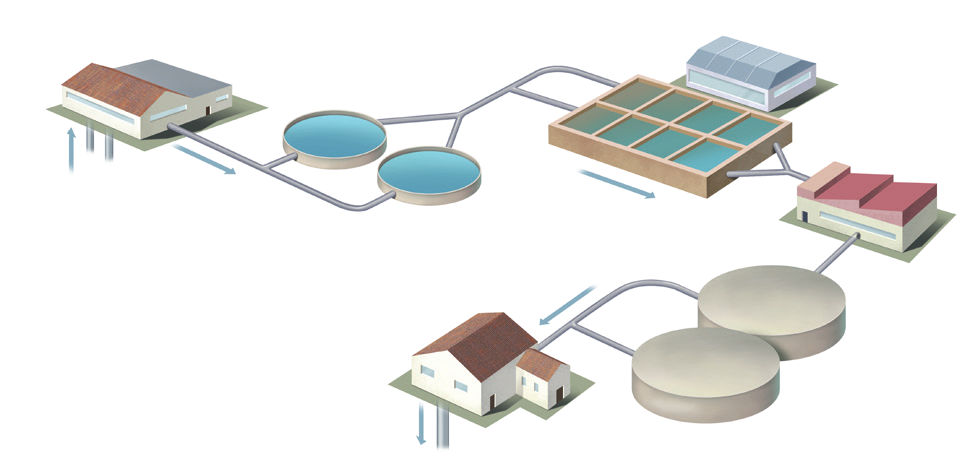

El ser humano extrae agua de la hidrosfera para cubrir sus necesidades. Aunque el agua sea relativamente abundante en la Tierra, no lo es tanto el agua de fácil acceso, por lo que resulta imprescindible realizar una gestión eficiente del agua.
6.1 USOS DEL AGUA
Los usos del agua se pueden clasificar en consumtivos y no consumtivos.
Usos consumtivos: Son aquellos en los que el agua se extrae de su lugar de origen y, tras su utilización, no es devuelta de forma inmediata o se retorna, pero con sus propiedades alteradas.
Usos no consumtivos: Son aquellos en los que el agua no es extraída de la fuente o, en caso de que sí lo sea, es devuelta de forma inmediata sin alterar su calidad.
La potabilización del agua
El agua potable no debe contener sustancias o microorganismos nocivos para la salud; tampoco debe presentar color, turbidez, mal olor ni un sabor desagradable. Para que cumpla estas características, es preciso someterla a un proceso de potabilización.

Diagrama del proceso de tratamiento de agua
Pasos del proceso de potabilización
Extracción: El agua se obtiene del subsuelo o de ríos, lagos y embalses.
Coagulación: Se añaden sustancias químicas al agua con objeto de que las arcillas contenidas en ella formen agregados.
Decantación: El agua se deja en reposo para que las arcillas de los agregados se depositen en el fondo del tanque.
Filtración: Los filtros de arena y de carbón activado eliminan los contaminantes de pequeño tamaño.
Desinfección: La adición de cloro elimina los microorganismos patógenos que puedan encontrarse en el agua.
Distribución: Se hace llegar a los distintos puntos de consumo por medio de una extensa red de canalizaciones.